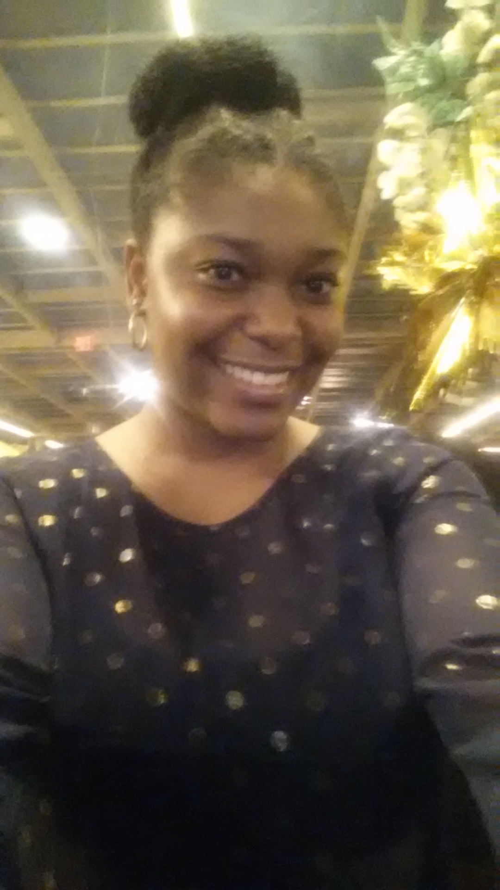

About Me
My name is Taneah Patterson. I am a Certified Full-Stack Web Developer, with a background in writing and communication, seeking a junior developer position that creates or enhances the user experience for clients and their customers. I am interested in playing a role in developing amazing websites for companies to ensure that their product stands out from the competition. My passions are writing and creating visually aesthetic masterpieces that elevate and simplify the user experience. My technical strengths are HTML, CSS, Bootstrap, Javascript, JQuery, ES6, ReactJS, NodeJS, Giphy, mySQL, Express, MongoDB, API, AJAX, NPM packages, MVC file structure, and sorting algorithms. I prefer to use an Agile mindset when tackling coding projects and generating products for clients. Some of my favorite projects include: A Watch Party app where friends can come together virtually to view their favorite shows, a ministry website for a local pastor, and a bilingual medication app that provides medical information. My love for writing, editing, and marketing coupled with my passion to continuously learn more about the tech industry drive my desire to contribute to providing innovative and well designed products to the world of tech.I graduated from Meredith College with a Bachelor of Arts in English. My English degree paired with my coding expertise make me a stellar addition to your technology team.
Connect With Me